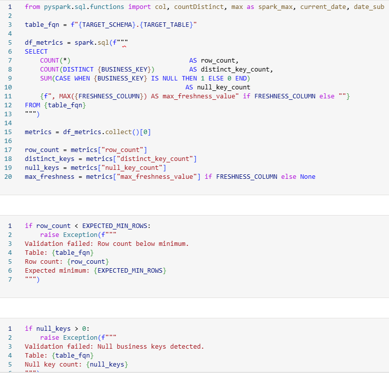

GXO Fabric Modernisation (Flagship Case Study)
I owned a defined subset of dataset/table modernisation within a wider migration from legacy on-premise SQL Server reporting toward Microsoft Fabric-enabled data products. My focus was improving reporting reliability, validation confidence, semantic consistency, documentation and BAU supportability across scoped operational domains.
What changed
Legacy SQL Server reporting logic was moved toward clearer Fabric-aligned data products with transformation, validation and semantic-layer controls.
Why it mattered
Operations and leadership needed trusted metrics, lower reporting drift, clearer lineage and dependable reporting continuity during migration.
What I owned directly
A scoped subset of datasets/tables across Pre-Advice, Orders and Inventory Transactions, plus validation checks, documentation, runbooks and performance review activity.
Scope boundary
Senior BI Analyst contributor within a wider migration programme. I owned defined delivery areas and collaborated on cross-stream design and cutover decisions.
Overview / context
The starting point was legacy on-premise SQL Server reporting supporting business-critical operational reporting in a live logistics environment. The aim was not simply to move reports from one platform to another; it was to modernise reporting foundations so operational datasets were easier to validate, support and reuse.
Within the wider migration programme, my scoped work focused on operational domains where reporting consistency and ownership were important: Pre-Advice, Orders and Inventory Transactions. The intended value was governed, reusable and auditable data products that could support BAU reporting with clearer lineage and lower key-person dependency.
Problem
Legacy SQL Server and reporting assets had transformation and KPI logic spread across multiple places. This created metric drift, duplicated logic and reconciliation overhead, especially when teams needed to explain differences between legacy outputs and new reporting layers.
The migration needed controls to prevent reporting drift during cutover. Stakeholders needed confidence that new Fabric outputs matched or improved legacy outputs before downstream use, and support teams needed documentation that made issue triage practical after delivery.
My ownership within the wider workstream
- Owned delivery for a defined subset of Fabric dataset/table work across Pre-Advice, Orders and Inventory Transactions.
- Produced source-to-target mapping and data-flow documentation for scoped entities and reporting routes.
- Maintained ERDs covering grain, join logic and KPI-relevant definitions to reduce ambiguity in reporting outputs.
- Implemented validation checks comparing source, transformed and semantic outputs for critical measures and business keys.
- Created run-log and issue-triage documentation so failures, exceptions and reconciliation differences could be reviewed consistently.
- Performed semantic model and DAX performance review where relevant to improve usability and supportable report behaviour.
- Contributed handover/runbook artefacts to improve BAU support and reduce reliance on tacit knowledge.
Scope note: I contributed this ownership inside a multi-person migration programme. I did not own the wider programme end-to-end, but I did own defined delivery areas and collaborated on design, validation and cutover decisions affecting my scope.
Validation and cutover controls
Validation was treated as a delivery control, not an afterthought. The purpose was to reduce cutover risk, prevent reporting drift and improve confidence before downstream reporting use.
Row-count checks
Compared source and transformed outputs to identify missing or duplicated records before semantic consumption.
Distinct business keys
Checked key uniqueness and expected grains for scoped operational entities and reporting tables.
Null key checks
Flagged missing critical identifiers that could break joins, aggregations or downstream report filters.
Freshness checks
Reviewed available load/freshness indicators so stakeholders understood whether outputs were current enough for use.
Source-to-semantic comparison
Compared source, transformed and semantic-layer outputs to support cutover confidence and KPI consistency.
Run-log and failure paths
Used run-log controls, issue notes and failure/notification handling where relevant to make triage more repeatable.
Evidence / screenshots
These screenshots show the migration delivery pattern in practice: orchestration in Fabric and validation logic implemented in PySpark.


Why this design / trade-offs
- Fabric-aligned data products over report-by-report rebuilds: more upfront structure, but stronger reuse, auditability and supportability.
- Validation controls over visual-only checking: additional delivery effort, but better confidence that migrated outputs were safe for operational use.
- Incremental migration over big-bang cutover: slower in places, but reduced disruption risk for recurring BAU reporting.
- Documented routines over tacit knowledge: more documentation overhead, but better handover quality and faster issue triage.
Decision outcomes enabled
- More consistent KPI interpretation across operational and leadership reporting conversations.
- Reduced reporting drift during migration by using validation and reconciliation checkpoints before downstream use.
- Faster issue triage using clearer lineage, source-to-target notes and run-log evidence.
- Higher confidence in recurring leadership and operational reporting while migration work continued.
- Better handover/supportability after migration work through ERDs, data-flow notes and runbook guidance.
Results / impact
- Moved scoped reporting domains toward governed Fabric-aligned data products.
- Improved metric confidence through validation and reconciliation controls.
- Reduced logic duplication in owned areas by consolidating transformation and KPI-relevant definitions.
- Strengthened supportability through ERDs, data-flow notes, runbooks and explicit escalation routes.
- Improved BAU confidence while the wider migration continued.
What this demonstrates
- Fabric migration delivery: practical delivery within a live operational environment, not a standalone demo.
- Data-quality and reconciliation mindset: row counts, key checks, freshness checks and source-to-semantic comparisons.
- Semantic-layer governance: clearer KPI definitions, grains, relationships and supportable reporting outputs.
- BAU reliability: modernising reporting foundations without disrupting critical recurring operational reporting.
- Documentation discipline: ERDs, lineage notes, runbooks and escalation routes that improve handover and supportability.
Next steps / what I’d improve
- Expand control coverage from current critical metrics to a broader quality-monitoring set with prioritised thresholds.
- Formalise semantic-model review cadence around usage telemetry and DAX query patterns, not only ad-hoc tuning cycles.
- Add lightweight automated documentation generation for key lineage and business definitions to reduce manual maintenance effort.